Requirements
Setting up Rigs for Retargeting
- Open Unreal Project with Third-Person Setup
- Import Hand Engine Recording FBX (including the animation) and import T pose FBX (Hands_Full_Skel.fbx) for the Hand Engine asset linked above in Requirements. We will use this to define our retargeting setup:
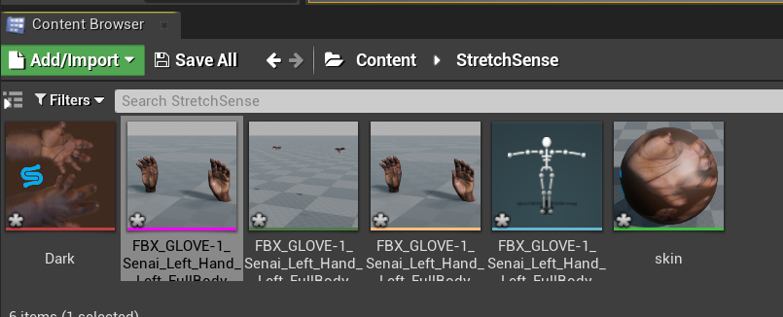
- Open the imported Skeleton and select the Retargeting Manager
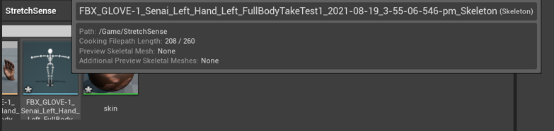
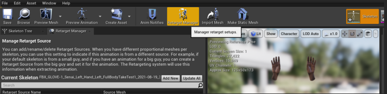
- Select Modify Pose>None>Create New Asset (Pose Asset)
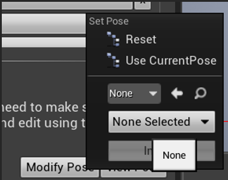
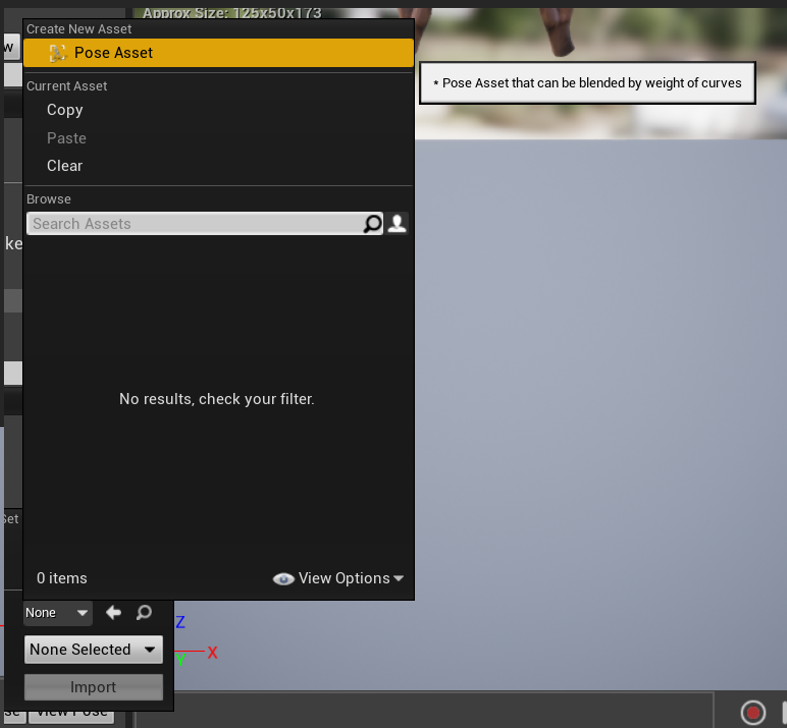
- Once you have chosen a file name for this Pose Asset and location to save it you will need to select the animation imported with Hands_Full_Skel_Anim (if you haven’t downloaded this you can access this at the top of this page).
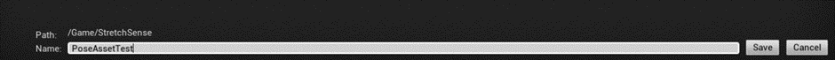
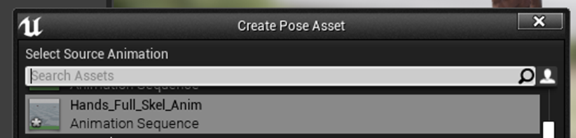
- Select Modify pose again this time you should have the recently created pose asset as an option
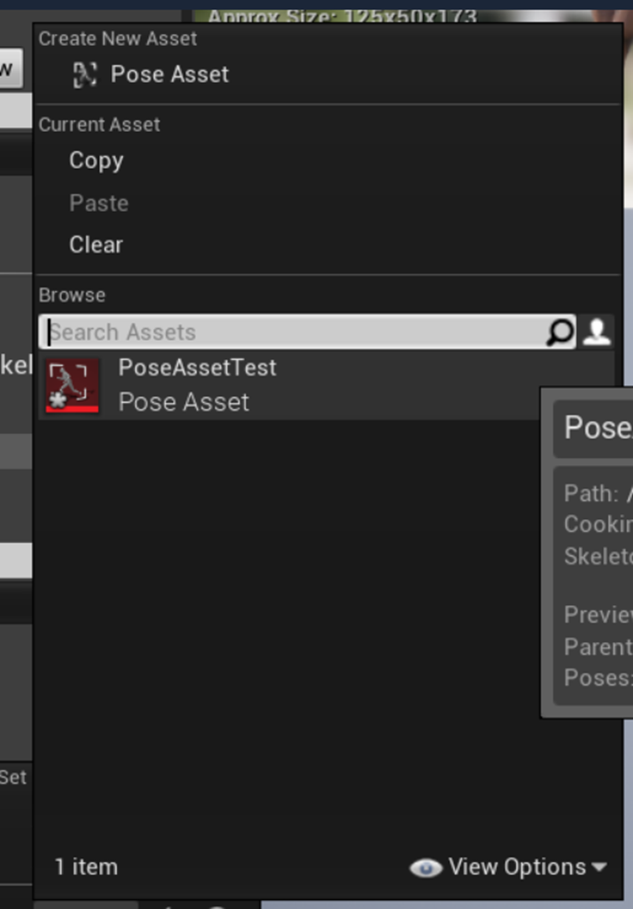
- Finally, select Modify pose once more and from the second dropdown select Pose 0 and then import. The hands in the scene should take on the new T-pose.
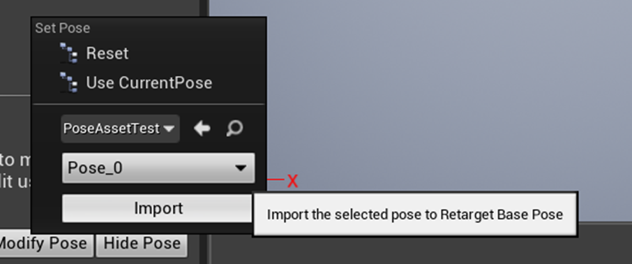
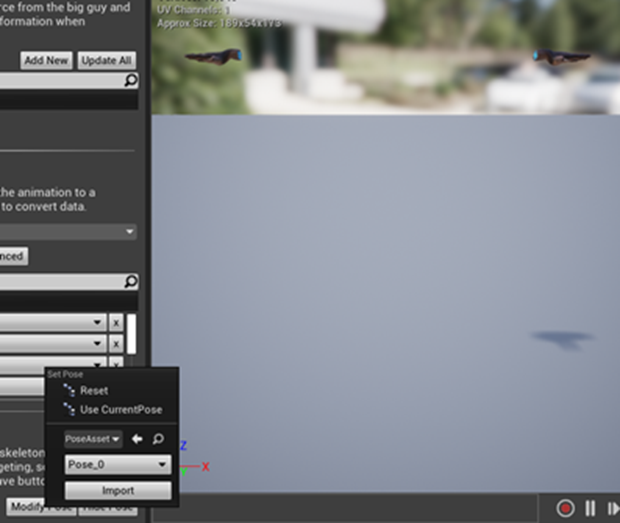
- In the select rig dropdown select humanoid rig, it should auto-populate the bones. Name and Save the Bone Mapping in a location of your choice and exit.
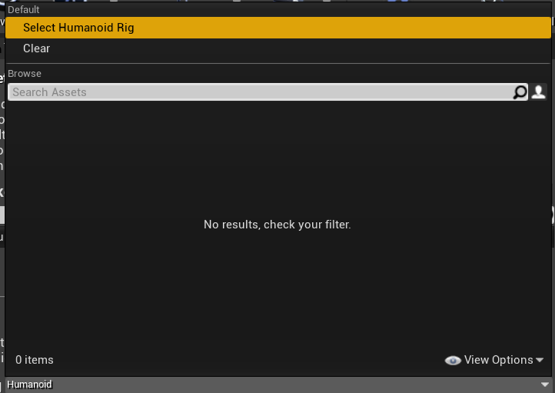
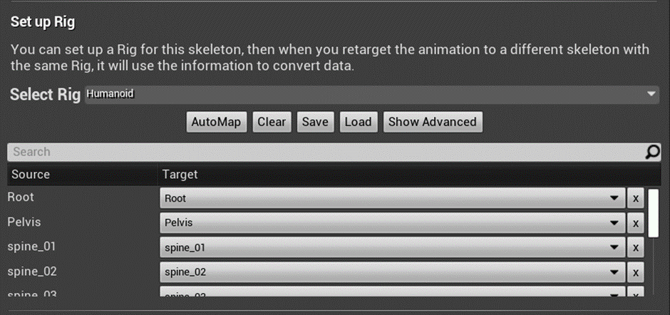
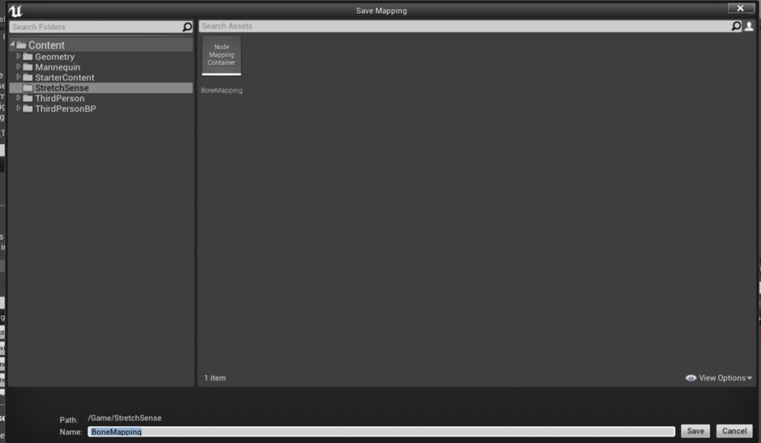
- Repeat this process (steps 3 to 8) with the skeleton of your target asset so each has been set up with the same bind pose (T-Pose)
Importing animations
- Select the animation and drag it into the content browser to import. Uncheck the import mesh option and set the skeleton to the previously imported/setup skeleton.
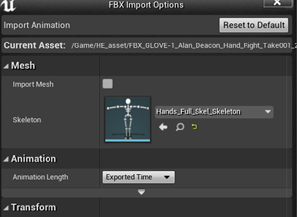
- This should just create a new animation file with the take data included
Retargeting
- Once both asset skeletons are set up in the retargeting manager you can now retarget the Hand Engine animation
- Find an animation you wish to retarget and right-click on the Animation Sequence>Retarget anim assets >Duplicate anim asset and retarget.
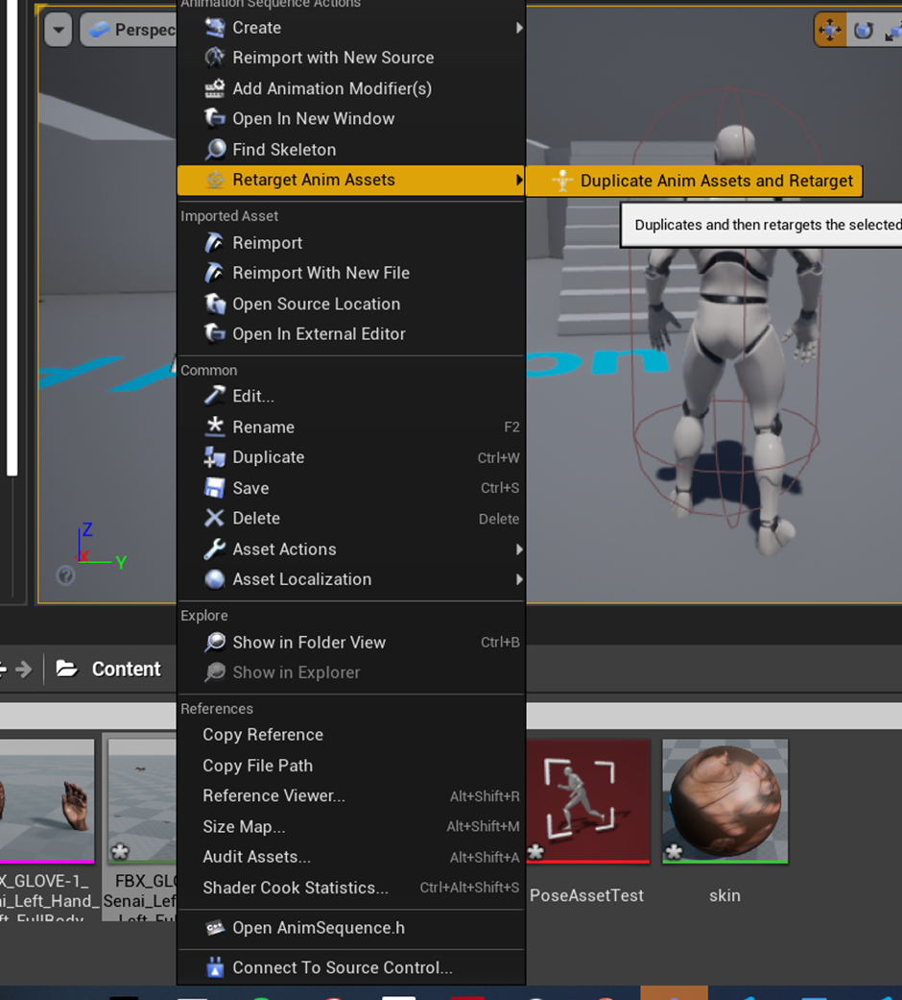
- Select the skeleton that you wish to retarget the animation to set it as the Target then press retarget.
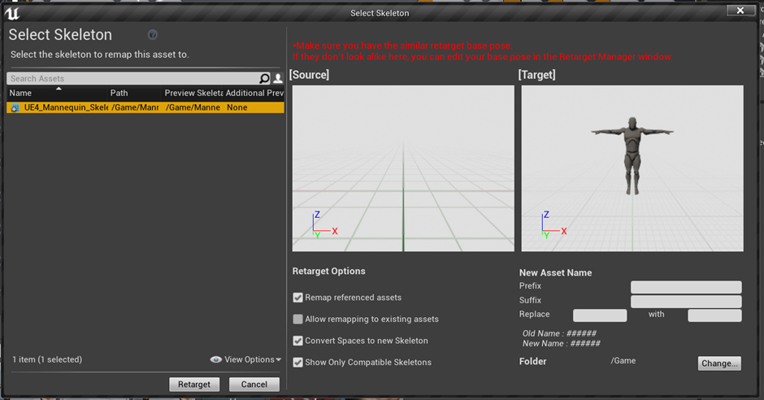
Please note: You may get an error message about not having a preview mesh. Navigate back to the skeleton and assign a Skeletal Mesh as a Preview Mesh and Apply these changes. Now retry Step 2.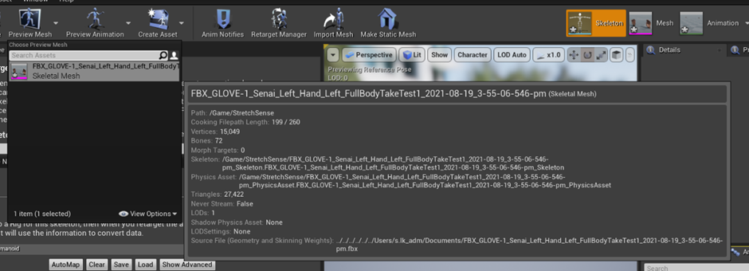
- This will create a new retargeted animation saved as an Animation Sequence transposing the selected animation onto the new Target asset
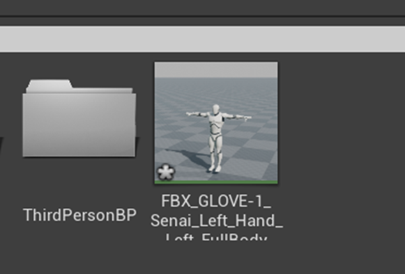
Blending Animations
- Open the AnimBlueBrint of your target asset or create a new one
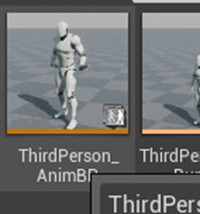
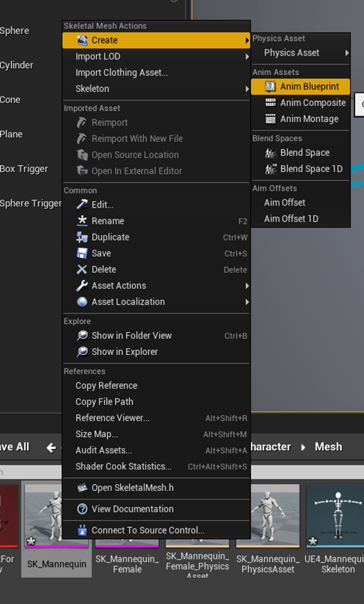
- Under the AnimGraph setup your first Base animation with a Layered blend per bone pose node in between
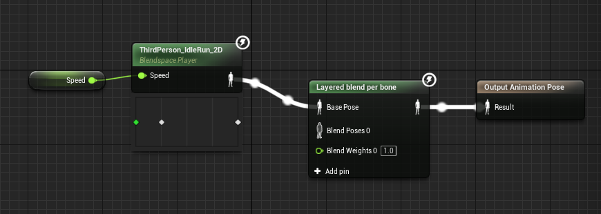
- Add the Retargeted Animation you set up and link it to the Layered Blend Pose as Blend Pose 0
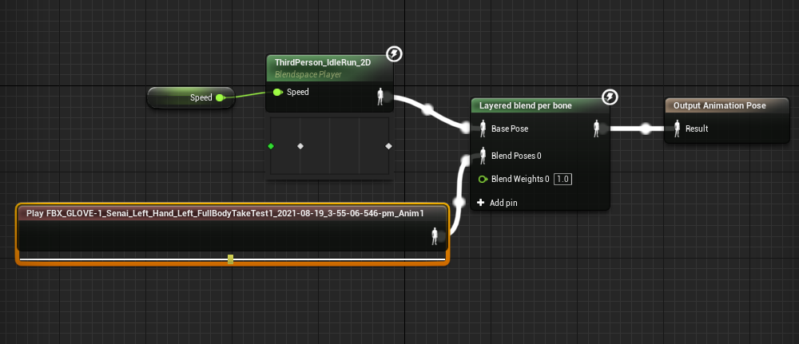
- Click on the Layered blend pose node and go to the Details pane. Add two Branch filter elements and name the bones of the left hand and right hand as the base bone (see images below).
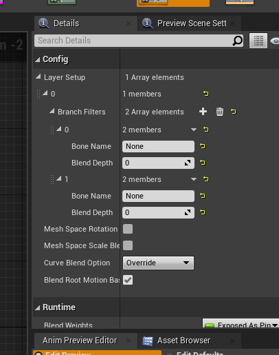
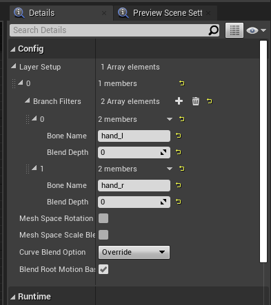
Please note: Blend Depth determines how much the animation blends between the Base animation and the blended animation. A value of 0 will give full weight to the Shadow animation and higher Blend Depth will increase the influence of the Base Pose.
- Hit Compile and Save the AnimBlueprint
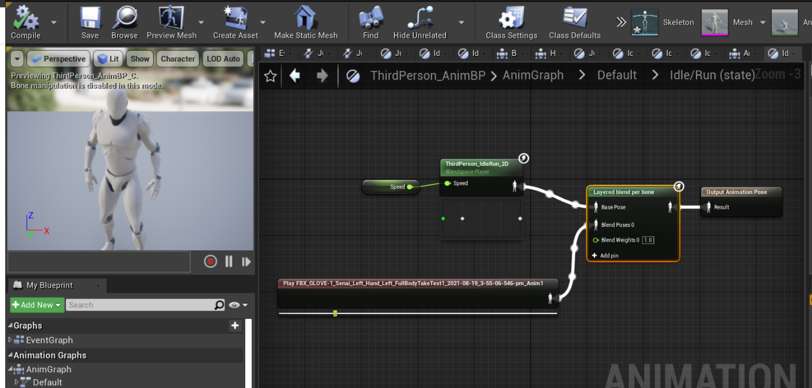
Please Note: If you want to realign animations in Unreal. Within the Animation Sequence, if you right-click on the timeline of the graph view (at the bottom of the screen) you can adjust the recording by adding (append) or removing frames to offset the animation in either direction.
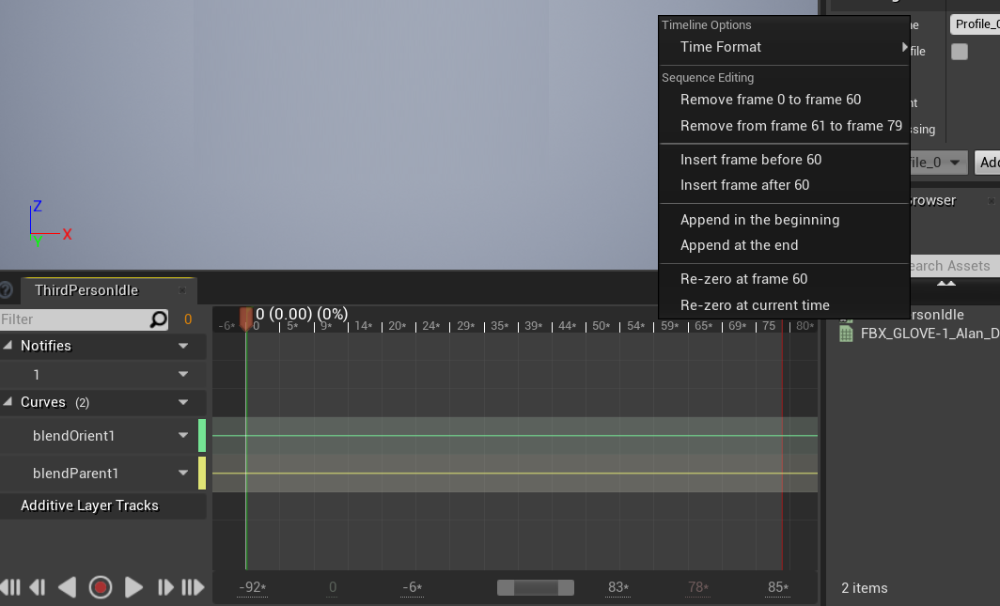